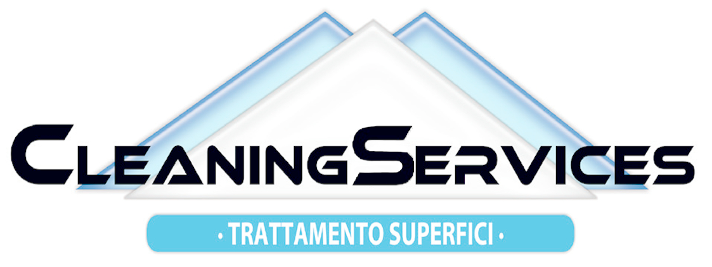
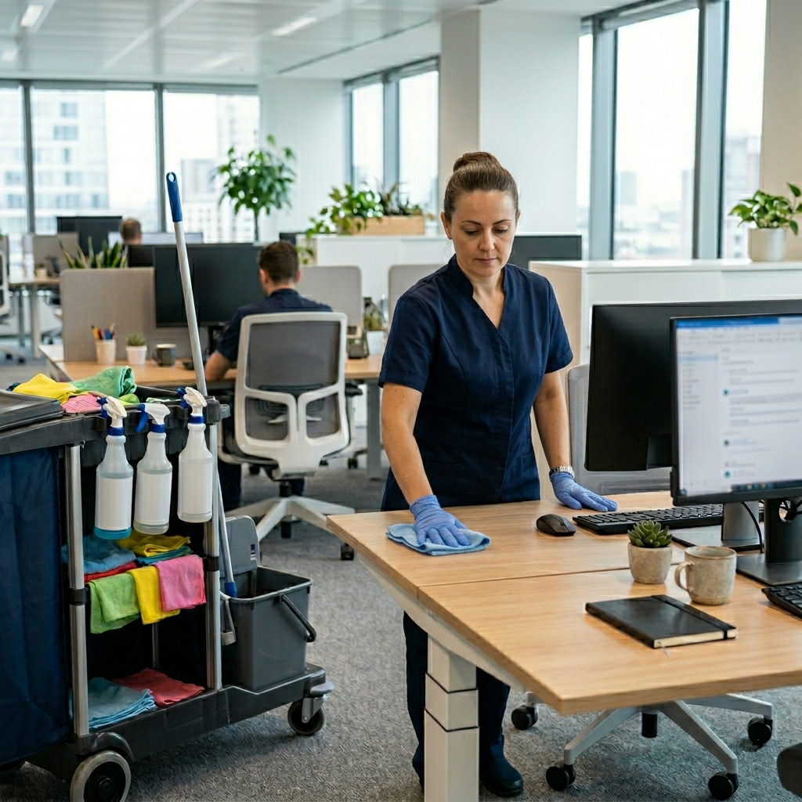
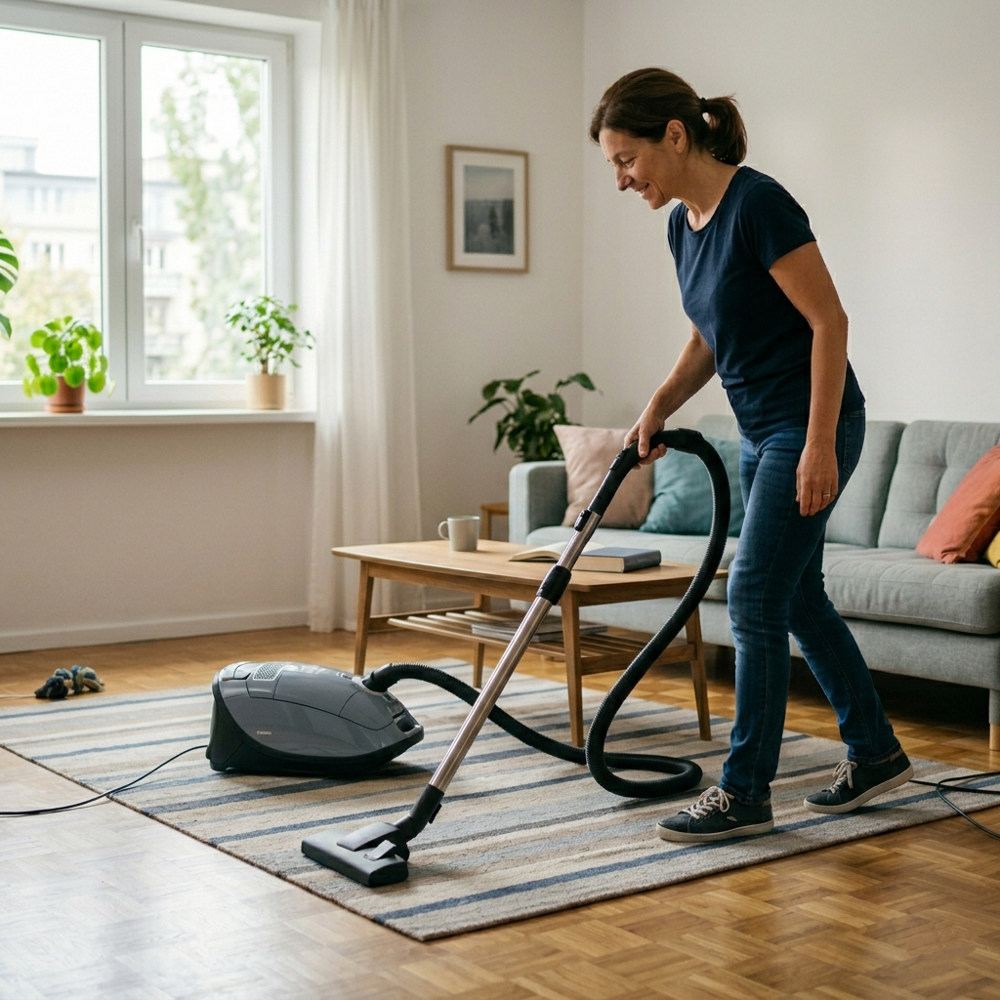
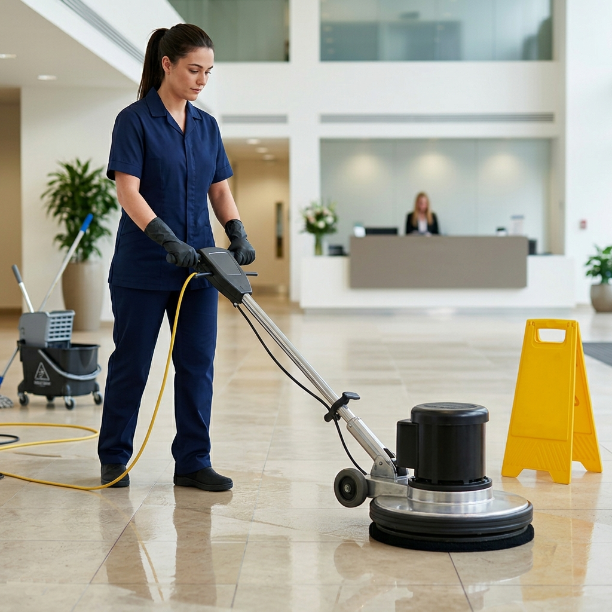

Sede Legale
Villaggio Epraz, 36 - 11020 Quart (AO)
CSASRA69P01F952J
01033890078

Sede Legale
Villaggio Epraz, 36 - 11020 Quart (AO)
CSASRA69P01F952J
01033890078
Offriamo servizi di pulizia per:
Impresa di Pulizia in Città
L'impresa di pulizie CLEANING SERVICES è specializzata nella fornitura di servizi di pulizia professionali, su cui i nostri clienti possono sempre contare. Offriamo un'ampia gamma di servizi di pulizia di alta qualità, tra cui la pulizia di appartamenti, uffici, palestre, capannoni, centri commerciali, condomini, scale condominiali, concessionarie auto e negozi.
La pulizia degli appartamenti viene effettuata con cura e attenzione ai dettagli, in modo da garantire un ambiente pulito e fresco in cui vivere. I nostri professionisti altamente qualificati sono in grado di pulire sia gli ambienti privati che quelli comuni, rendendoli impeccabili in ogni momento.
Offriamo inoltre servizi di pulizia professionale per uffici e luoghi di lavoro, che includono la pulizia di scrivanie, sedie, superfici, pavimenti e bagni. I nostri professionisti sono in grado di garantire luoghi di lavoro puliti e igienizzati, essenziali per incrementare la produttività e la sicurezza sul posto di lavoro.
I nostri principali servizi professionali

L'impresa di pulizie Cleaning Services è specializzata nel fornire un servizio professionale di pulizia e sanificazione per uffici di ogni dimensione e settore. Il nostro team di esperti è altamente qualificato e preparato per garantire un ambiente di lavoro pulito e sicuro per i tuoi collaboratori e clienti.
Offriamo una vasta gamma di servizi, tra cui la pulizia delle superfici, delle vetrate, di tappeti e dell'arredamento, l'igienizzazione dei bagni e la raccolta dei rifiuti. Utilizziamo solamente prodotti certificati e attrezzature all'avanguardia per garantire massima efficienza e sicurezza durante le operazioni di pulizia.

L'impresa di pulizie Cleaning Services è un'azienda specializzata nella pulizia e sanificazione di appartamenti e condomini. Grazie ad anni di esperienza nel settore, siamo in grado di offrire soluzioni personalizzate che si adattano alle esigenze specifiche dei nostri clienti.
Il nostro team di professionisti altamente qualificati utilizza solo prodotti e attrezzature di altissima qualità per garantire risultati impeccabili e una pulizia profonda ed efficace. La nostra missione è di offrire un servizio completo e di alta qualità, che soddisfi al meglio le esigenze di ogni cliente.
Offriamo una vasta gamma di servizi di pulizia e sanificazione, che includono la pulizia delle superfici, dei tappeti, delle moquette, dei pavimenti, l'igiene dei bagni e delle cucine, la rimozione degli acari e la sanificazione degli ambienti contaminati da batteri e agenti patogeni.

L'impresa di pulizie cleaning services si distingue nella vasta gamma di servizi offerti anche per la lucidatura di pavimenti in legno, marmo e qualsiasi altra superficie. Ciò viene realizzato attraverso la scelta accurata di detergenti e prodotti specifici per ogni tipo di superficie che, insieme a una meticolosa lavorazione professionale, garantiscono un risultato impeccabile e duraturo.
Grazie all'esperienza maturata nel settore delle pulizie e alla costante attenzione alle nuove tecnologie e ai nuovi prodotti, l'impresa è in grado di soddisfare le esigenze di ogni cliente, fornendo una vasta gamma di soluzioni personalizzate. Inoltre, l'utilizzo di attrezzature all'avanguardia, come lucidatrici professionali di ultima generazione, consente di eseguire il lavoro in modo efficiente e rapido, senza danneggiare alcuna superficie trattata.